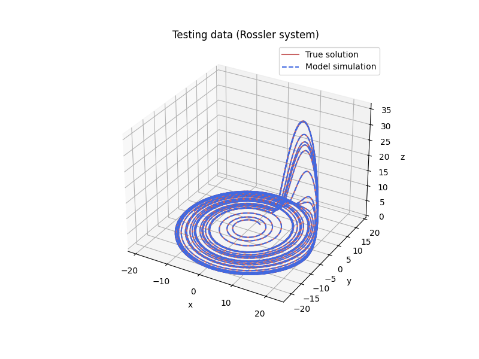

Note
Click here to download the full example code
Identification of the Rossler system with SINDy¶
This example shows how to use SINDy to discover the chaotic Rossler system from
measurement data via the deeptime.sindy.SINDy estimator and
deeptime.sindy.SINDyModel model. Once we’ve learned the system, we can
also simulate forward in time from novel initial conditions.
Note that for this example we pass in the exact derivatives. In practice one can also pass in a numerical approximation in their place.
- 
Out:
/home/mho/Development/deeptime/.nox/make_docs/lib/python3.9/site-packages/sklearn/utils/deprecation.py:87: FutureWarning: Function get_feature_names is deprecated; get_feature_names is deprecated in 1.0 and will be removed in 1.2. Please use get_feature_names_out instead.
warnings.warn(msg, category=FutureWarning)
x' = -1.000 x1 + -1.000 x2
y' = 1.000 x0 + 0.100 x1
z' = 0.100 1 + -14.000 x2 + 1.000 x0 x2
13 import matplotlib.pyplot as plt
14 import numpy as np
15 from scipy.integrate import odeint
16 from sklearn.preprocessing import PolynomialFeatures
17
18 from deeptime.sindy import SINDy, STLSQ
19
20
21 # Generate measurements of the Rossler system
22 a = 0.1
23 b = 0.1
24 c = 14
25
26
27 def rossler(z, t):
28 return [-z[1] - z[2], z[0] + a * z[1], b + z[2] * (z[0] - c)]
29
30
31 dt = 0.01
32 t_train = np.arange(0, 150, dt)
33 x0_train = [-1, -1, 0]
34 x_train = odeint(rossler, x0_train, t_train)
35 x_dot_train = np.array([rossler(xi, 1) for xi in x_train])
36
37 # Plot training data
38 fig = plt.figure(figsize=(8, 6))
39 ax = fig.add_subplot(111, projection="3d")
40 ax.plot(x_train[:, 0], x_train[:, 1], x_train[:, 2], color="firebrick", alpha=0.7)
41 ax.set(xlabel="x", ylabel="y", zlabel="z", title="Training data (Rossler system)")
42
43 # Instantiate and fit an estimator to the data
44 estimator = SINDy(
45 library=PolynomialFeatures(degree=3),
46 optimizer=STLSQ(threshold=0.05),
47 )
48 estimator.fit(x_train, y=x_dot_train)
49
50 # Get the underlying ODE model
51 model = estimator.fetch_model()
52 model.print(lhs=["x", "y", "z"])
53
54 # Simulate from novel initial conditions
55 t_test = t_train
56 x0_test = [2, 3, 0]
57 x_test = odeint(rossler, x0_test, t_test)
58
59 # Plot test data
60 fig = plt.figure(figsize=(8, 6))
61 ax = fig.add_subplot(111, projection="3d")
62 ax.plot(
63 x_test[:, 0],
64 x_test[:, 1],
65 x_test[:, 2],
66 label="True solution",
67 color="firebrick",
68 alpha=0.7,
69 )
70 ax.set(xlabel="x", ylabel="y", zlabel="z", title="Testing data (Rossler system)")
71
72 # Simulate data with SINDy model and plot
73 x_sim = model.simulate(x0_test, t_test)
74 ax.plot(
75 x_sim[:, 0],
76 x_sim[:, 1],
77 x_sim[:, 2],
78 label="Model simulation",
79 color="royalblue",
80 linestyle="dashed",
81 )
82 ax.legend()
Total running time of the script: ( 0 minutes 1.469 seconds)
Estimated memory usage: 10 MB